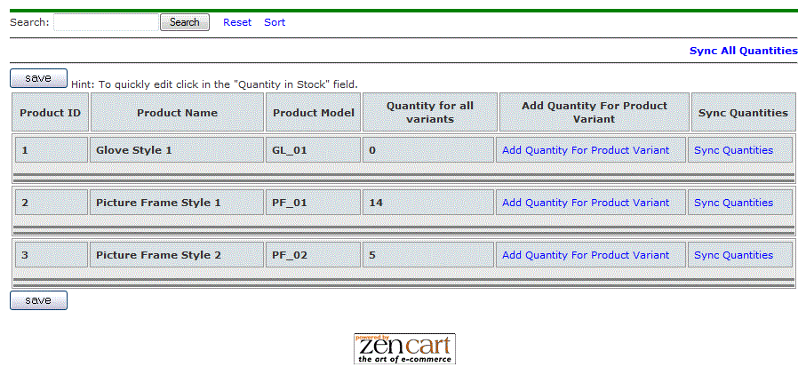
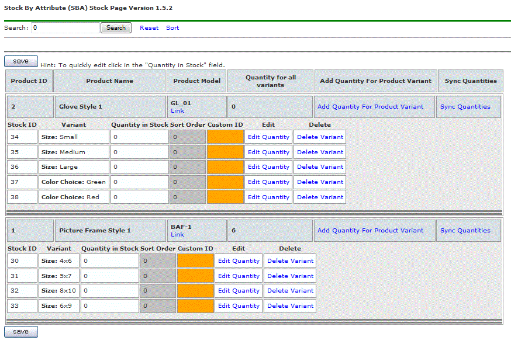
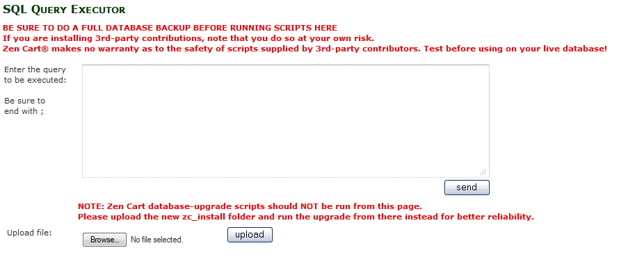

Installation | Configuration | Attribute Stock Setup | Optional Update | Optional Export / Import | Notes | HOME
The Optional SQL script is intended to initially fill the stock table with the same quantity that the product has. The script only creates entries for products that have associated attributes.
The first time the script is run on a clean new installation (the new SBA stock table is empty), then all found records are added.
When the script is run a second time, if no additional records are found to add to the stock table, then there will be no change to the database entries in the SBA table. However, if there has been new products added that also have had attributes associated, the new records will be added to the SBA table.
In effect the script may be used to add new entries to the SBA table, but this is not the recommended method for adding small quantities or new product. Since the steps are more involved then simply going to the admin>Catalog>Products with Attribute Stock entry page and add the new entries via the provided methods.
This script finds all existing products and their corresponding attribute variants in Zen Cart and populates the product_with_attributes_stock table with that data.
Use this option at your own risk!
Backup your databases prior to using these files or making any changes.
There are three methods of performing this task.
This option could be found when running the http://www.YOUR_DOMAIN.com/YOUR_ADMIN/stock_by_attr_install.php or admin>Configuration>Products With Atrtributes Stock.
Under Available Options you would select Run Optional SQL and click on Run Script (picture show below).
This script is a great tool for Zen Cart users that already have setup many products and attributes. This script will gather all attributes that are related to products and populates the
products_with_attributes_stock table with that data. This table holds information necessary for SBA functionality.
Before Optional SQL is ran, admin>Catalog>Products With Attributes Stock looks in the database and displays all products in Zen Cart as follow :

At this point attribute stock variant should be added either manually by clicking on Add Quantity for Product Variant one product at a time or by running the Optional SQL.
Running the Optional SQL script, will automatically looks up all products and their corresponding attributes, and populates the products_with_attributes_stock table with product attribute variants and displays it as follow:

By default it sets the quantity for each variant equal to the Quantity for all variants of that product. The reason for this logic, is when this script is executed, if the quantity for each variant equals zero (0), the product will show Out of Stock on the product info page!
In the case of Pictures Frame Style 1, Quantity Stock for each variant's quantity (Size: 8x10, Size: 4x6, Material: Wood & etc) is set set to 14, equaling Quantity for all variants of 14 for that product.
NOTE: When executing the Optional SQL, you do have the option of not allowing this, and setting your own stock value for all variants. This option can be triggered by revising YOUR_ADMIN/stock_by_attr_install.php file at around line 457.
Find:
//use 'p.products_quantity' to get the quantity from the product table
//Use any value you require if you want to set all attribute variants to
a specific number such as 0
//example: $insertQtyValue = 0;
$insertQtyValue = 'p.products_quantity';
Change this:
$insertQtyValue = 'p.products_quantity';
To:
$insertQtyValue = 10;
Now when the Optional SQL is executed, it place the value 10 for all attribute stock variants.
This "Optional.sql" will create entries in the new products_with_attributes_stock table based on current products that have attributes associated with them.
Open "Optional.sql" in a text editor, go to your admin>Tools>Install SQL Patches and paste the content of "Optional.sql" here, and then click on send.

Go To Index
Zen Cart Open Source E-commerce - Stock by Attributes
This contribution is subject to version 2.0 of the GPL license, that is bundled with this package in the file LICENSE, and is available through the world-wide-web at the following url: http://www.zen-cart.com/license/2_0.txt. If you did not receive a copy of the Zen Cart license and are unable to obtain it through the world-wide-web, please send a note to license@zen-cart.com.